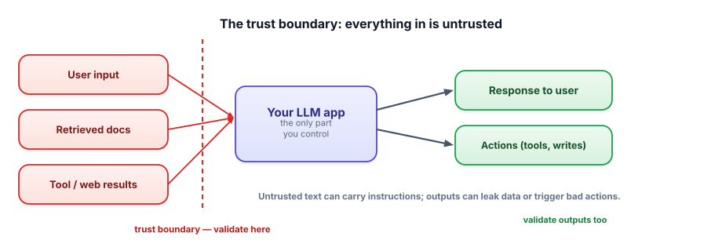

The threat model
Before you can defend an LLM app, you have to know what you’re defending against. LLM systems have a genuinely new attack surface — they take instructions in natural language and act on text from untrusted sources. This lesson is the map of what can go wrong, so the next lessons can fix each piece.
Why LLM apps need a fresh threat model
Traditional apps have a clear line between code (trusted) and data (untrusted). LLM apps blur it: the model treats all text as potential instructions, and much of that text comes from places you don’t control — user messages, retrieved documents, web pages an agent reads, tool outputs. Add the ability to take actions (Track 4), and a malicious string in a document can become a real-world action. So the first discipline of LLM safety is drawing the trust boundary and treating everything outside it as hostile.

A threat model is a structured answer to “what could go wrong, and who would make it go wrong?” For an LLM app it covers the assets at risk (user data, system prompts, the ability to take actions, your reputation), the untrusted inputs (anything not written by you: user text, retrieved content, tool/web results), and the attacker goals (extract data, make the app do something harmful, produce prohibited content, run up your bill). The trust boundary is the line between what you control and everything else.
The main LLM-specific threats
| Threat | What it means | Lesson |
|---|---|---|
| Prompt injection | Untrusted text contains instructions that hijack your prompt | 7.2 |
| Jailbreaks | Tricks that bypass the model’s safety to produce prohibited content | 7.3 |
| PII leakage | Sensitive data exposed in logs, outputs, or to third-party models | 7.4 |
| Unsafe content | The app produces harmful, hateful, or dangerous output | 7.5 |
| Unsafe actions / bad output use | Model output triggers harmful actions or downstream injection (XSS, SQL) | 7.6 |
Threat modeling is mostly disciplined thinking. For a customer-support agent that can read tickets, search docs, and issue refunds, you’d enumerate:
# ASSETS (what an attacker wants)
# - customer PII (names, emails, payment info)
# - the refund tool (can move money)
# - the system prompt / internal rules
# UNTRUSTED INPUTS (where attacks enter)
# - the customer's message (direct prompt injection / jailbreak)
# - retrieved help-doc chunks (indirect injection if any are user-editable)
# - tool results (a fetched page could contain hidden instructions)
# ATTACKER GOALS → the questions to defend against
# - "Can a crafted message make it refund $10,000?" → 7.2, 7.6 + human approval
# - "Can it be tricked into leaking another user's data?" → 7.4 + access controls
# - "Can it be made to produce abusive content?" → 7.3, 7.5Writing this list before building tells you exactly which guards to add and where. The threats above map one-to-one onto the rest of this track.
- LLM apps blur the code/data line — the model treats all text as possible instructions.
- Draw the trust boundary: user input, retrieved docs, and tool results are all untrusted.
- Outputs are risky too — they can leak data or trigger harmful actions.
- The core LLM threats: injection, jailbreaks, PII leakage, unsafe content, unsafe actions.
- Threat-model before building: list assets, untrusted inputs, and attacker goals.
Your RAG agent retrieves help articles, some of which users can edit. Why does that make the retrieved content an attack surface?
1. List the untrusted inputs for a coding assistant that reads your repo, runs commands, and browses docs.
2. Why are an LLM app’s outputs part of the threat model, not just its inputs?
3. A teammate says “we’ll add security later, after the demo works.” Give the strongest counterargument.
▸ Show solutions & reasoning
1. The user’s prompt, the repository contents (a malicious file/README could contain injected instructions), the output of any command it runs, and any web/doc pages it browses. Each is text the model may treat as instructions — and this assistant can run commands, so injection there is especially dangerous (it could be steered to exfiltrate code or run harmful commands). Everything it ingests is untrusted.
2. Because outputs cross back into systems and people: an output used in HTML can carry an XSS payload, one used in a query can inject SQL, one returned to a user can leak another user’s data or a secret, and one that triggers a tool can take a harmful action. The model’s output is itself untrusted and must be validated before it’s used (Lesson 7.6). Security is about the whole flow, not just the front door.
3. Because LLM vulnerabilities aren’t cosmetic — prompt injection and data leakage can cause real harm (money moved, data exposed, abusive content shipped under your brand), and they’re intrinsic to how the app works, not edge cases. Retrofitting security after the architecture is set is far harder and you’ll likely ship the demo to real users. The threats are predictable and map to known defenses, so designing for them up front is cheap; discovering them in production is expensive and sometimes catastrophic.
Good LLM security comes from adopting an adversarial mindset: for every input your system reads and every output it produces, ask “if someone wanted to abuse this, how would they?” Could a crafted message make the agent ignore its rules, reveal its system prompt, call a dangerous tool, or leak data it retrieved for another user? This is red-teaming — deliberately attacking your own system — and it’s the fastest way to find holes before attackers do. Build a small suite of adversarial test cases (alongside your golden set from Track 6) and run them on every change.
You don’t have to invent the catalog from scratch. The security community maintains the OWASP Top 10 for LLM Applications, which enumerates the recurring risks — prompt injection, insecure output handling, sensitive information disclosure, excessive agency, and more — with mitigations. It’s the canonical checklist, and interviewers love when you reference it. The throughline for this whole track: an LLM is a powerful, gullible component wired to untrusted text and (often) real actions.
Your job is to put trustworthy, deterministic guards around it — at the input, the prompt, the tools, and the output — so that when (not if) the model is fooled, the blast radius is contained. The next lessons build each of those guards.
The most important and most LLM-specific threat is the one where untrusted text becomes instructions. Let’s tackle it head-on. Next: prompt injection.